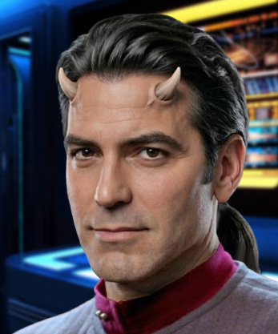

FOTORICETTA PER I 'CORNETTI ALLA NUTELLA'
dose per 210 persone
Dunque:
- 1500 kg di farina
- 120 kg di burro
- 150 kg di zucchero semolato (cos'è lo zucchero semolato?)
- 200 uova intere e 200 tuorli
- 50 kg di lievito di birra
- vanillina...?
- sale
- Nutella q.b.
Setacciare 1500 kg di farina... No, Geppo così non va! Questa vecchie ricette gastronomiche sono troppo complicate... se vogliamo festeggiare alla grande la fine della quarta missione occorrono più spiegazioni... cosa "me" vorrà dire setacciare?
- Capitano Alighieri, messaggio personale priorità 6 in arrivo per lei dalla Terra Di Sotto.
- In Audio. Ciao, Mamma. No, va tutto bene, mi stavo rilassando nel mio alloggio. No, Frruuu non c'è, non mi stavo rilassando in quel senso... sto cucinando. Già. Ora smetti di ridere a aiutami piuttosto: cos'è lo zucchero semolato? Ah. E se adopero quello normale? Cosa significa q.b.? Quanto Basta... E io come faccio a stabilire 'quanto basta'? A occhio? Questi mortali! Un pugnetto... ogni persona. uhm...310 pugnetti... più uno in più perché non si sa mai!
Oh, va tutto bene, ADESSO. Ci siamo levati di torno tutti quanti: quei disgustosi cadetti si sono finalmente sposati e con i Maxwell e Anubi sono spariti insieme al Ferengi. Finalmente soli!
Purple storm... in the space...
Deeppy sky... all around...
all around... my companion...
JUST MY SHIP, MY CAT AND ME...
Sì la cerimonia è stata nauseante, come mi aspettavo... tutti quei fiori replicati, quei vestiti
allucinanti... lei in bianco, lui in nero... ma possibile che in tutti questi secoli l'umanità non abbia
ancora compreso il vero e unico scopo della creazione, essere LIBERI?! E invece continuano a legarsi sempre
più... ci crederesti? Le damigelle in rosa. ROSA! per fortuna i miei ufficiali superiori sono consoni del
ruolo che occupano e si sono rifiutate di infilarsi in quei cosi tutti volant e gagà! Oh sì, rifiutate, nessun
dubbio, il mio Capo della Sicurezza sa farsi rispettare quando vuole.
Ne avevano confezionato uno anche per Frruuu, te lo immagini?
No, non te lo immagini.
Sì, lei sta bene. Peccato non poter fare un salto a casa, potremmo venire a trovarti... I meli sono fioriti? E
la marmellata è pronta? Splendido. Avrei giusto bisogno di una nuova batteria di pentole queste hanno 200 anni
e cominciano a incrinarsi... sai, sarebbe più facile se riuscissimo a farne una con i coperchi, una volta
tanto...
- Capitano Alighieri, è richiesta la sua presenza nell'hangar navette.
Troppo bello per essere vero. Cosa c'è adesso? Vogliono salutarmi di nuovo, farmi ciao ciao con la manina?
Perché non si limitano a sparire all'orizzonte e basta?
- Mamma, devo lasciarti. Ci sentiamo presto. Saluta tutti per me.
Oh, sì, Geppo, sarà meglio che mi cambi prima. Vedermi in grembiulone sporco di farina potrebbe infliggere un
duro colpo ai miei sottoposti. Senza contare che Ernestina è di certo in agguato...
- NON SONO PARTITI! Come sarebbe non sono partiti? Kamasutra spaziale? Lo vedi, hanno ragione i miei parenti!
Basta un sì davanti a una tipa in uniforme e subito si danno alle orge! Con tutto il tempo, lo spazio e gli
alloggi vuoti che ci sono sulla nave hanno aspettato di essere sulla navetta in partenza per farlo...! Che8
religione insulsa! Ora sono tutti in Infermeria sotto choc, abbiamo di nuovo il ferengi in cella, il cagnaccio
in giro e i due Maxwell... oh un messaggio di priorità 1 per la Maxwell... davvero? E a me cosa... Oh, salve
Comandante, che piacere averla di nuovo a bordo... stavo dirigendomi in Plancia... già... no, la nostra
assicurazione non contempla i casi di questo genere... ohhh, era meglio restare nel mio alloggio a cucinare...
- E così i cornetti dovranno aspettare e anche il festino in sala mensa: dopo che la Maxwell ha parlato con De
Leone è venuto il mio turno... il Re De Leone che si scomoda per l'ex cadetto Alighieri... oh, se mia madre
potesse vedermi!
Però... potrò farlo prima del previsto visto che ci aspetta un viaggio di ritorno verso casa... verso la Terra
di Sotto, di Sopra, di fianco... a Casa! Finalmente un po' di fango alla giusta temperatura, marmellata fatta
in casa e del caffé espresso decente, per Calcabrina!
Il documento che abbiamo ricevuto dal Presidente Maronimass ha fatto la sua giusta impressione a quanto
pare... e se alla Flotta stellare non temono i continui sbalzi di continuum temporale del Guardiano n°2,
allora... chi sono io per preoccuparmene? Il mio rapporto lo hanno avuto e una volta sulla Terra sbarcheremo
ferengi, orgiaioli e i Maxwell, dunque perché preoccuparci anzitempo? Ci aspetta un viaggio di tutto riposo!
- Capitano, in Plancia. Atcccim!
- Comodi. Che hai piccola, se più nera di un cuore d'Ammiraglio...
- Ho appena scoperto cosa l'equipaggio pensa di me! Non vorrebbero avermi come Capitano!
- Davvero?
- Preferiscono te! Sono troppo un bravo secondo per loro per aspirare a qualcosa di meglio!
- Mettiti l'animo in pace, Frruuu: sei vittima del classico effetto Riker! perché diventare Capitano e correre
il rischio di non vederci più quando si può stare tutti contenti e felici a bordo?
- Bhe, potresti essere tu il mio secondo... Va bene, va bene non guardarmi il quel modo! Speriamo in qualcosa
di nuovo, piuttosto!
Strana richiesta per una nave che dopo tante vicissitudini si ritrova di nuovo al punto di partenza... riso
colorato per tutta la nave (i due neo-sposi hanno fatto il giro di tutti i corridoi finché Argo non ha
cominciato a bombardarli, con altro materiale e non riso...); la sicurezza in fibrillazione a causa del
ferengi e in cerca di altri svaghi; il mio Ingegnere Capo che a causa delle solite lacrime inciampa su i suoi
stessi piedi e passa metà del tempo sdraiata per terra... Se solo passasse lo stesso tempo a riparare i
problemi di luce negli alloggi!
Fabiola sembra essersi ripresa, a parte la sua strana mania di bere in Plancia con conseguenti aloni sulle
consolle altrui...
Ben arrivata Rael, come va con il prigioniero? Ernestina, non la faccia troppo lunga è solo una macchia di
te...! Davvero? Non me ne ero accorto.
A pensarci bene, una novità c'è stata: il nostro Consigliere Becco brilla per la sua assenza e dalle frequenti
occhiate di Peter ho la vaga impressione che conosca qualcosa che io ignoro (è mai possibile?). è evidente che
è stato lui a colpirlo. Non capisco però perché aspettarsi una punizione - certo non da me, io ammiro il
coraggio! Se la nostra dottoressa fa bene il suo lavoro e la smette di giocare con i cagnetti altrui,
riusciremo a fare tutto il viaggio in pace...
Cosa stava dicendo Frruuu? Niente di nuovo?
- Scudi alzati!
- Condizione verde, cessato allarme, Capitano!
- Vedi, Beppino , non c'è niente di cui preoccuparsi!
- Scudi alzati! Si può sapere che succede?
- Se becco chi si azzarda a bere tè sulla mia consolle... un momento solo, capitano! devo ricalibrare i phaser!
- Peter, usciamo dal sistema! Rael, da chi siamo minacciati? Signor Da, meno male! Forza aiuti Renzi voglio
delle risposte! Siamo sotto attacco?
- Capitano, uno di quei tunnel transwarp di cui l'Ammiraglio ci aveva parlato... ne abbiamo uno sulla nostra
rotta, Signore. Potrebbe esserci una qualche minaccia per la nave...
- A proposito di sfiga... No, Frruuu non ce l'ho con te... Su, sarò buono e accetterò suggerimenti...
- Un universo parallelo?
- Marziani vestiti di Lamù?
- Gli altri insegnanti che sono venuti a prendere la Maxwell e vogliono un passaggio fino a casa?
- Romulani?
- Il Dominio?
- Mia suocera?
- Oh Beppino, andiamo non prendi questa minaccia sul serio? perché non nomini addirittura i Borg?
- Colpo in arrivo dal tunnel Tranwarp! Gli scudi non sono alzati!
- RAEL! Manovra evasiva! Bob, schema Stark-Cobledik!
- Scafo laterale danneggiato, quel che ne resta! Evitato il secondo colpo!
- Rael!
- Pronto, Capitano!
- Signore! Il computer ha riconosciuto le armi come appartenenti ai Borg... Sono Borg!
I BORG! Come siamo finiti davanti ad una nave cubo Borg! Tutti noi conosciamo la loro pericolosità, solo che
davo per scontato che, anche se un giorno fossimo finiti l'uno davanti l'altro Essi ci avrebbero guardato un
momentino e poi sarebbero andati da qualche altra parte a ridere alle nostre spalle! Una classe Miranda
turbolenta e legata con l'elastico che si cimenta contro qualcosa che ha distrutto un'intera flotta!
Decisamente qualcuno, e mi chiedo CHI, non vede di buon occhio la mia bella casetta spaziale! E ora?
L'idea di rispondere al fuoco è ridicola ma è l'unica alternativa che ho! Perfino il mio Ingegnere Capo ha
smesso di piangere ed è corsa in Sala Macchine per dare una mano. Non ho il tempo per dare un'occhiata in
giro, mi auguro solo che tutti siano pronti al combattimento che ci aspetta e all'inevitabile... NO! Se non
possiamo vincere, e questo è evidente, la fuga è un'alternativa accettabile... dopotutto è solo questo tunnel
che gli permette di... Rael! Da! Dobbiamo chiudere il tunnel tranwarp! Peter, dia loro una mano! Bob, manovre
evasive! Frruuu, rapporto danni.
Gli sposini hanno scelto il giorno sbagliato per darsi da fare: a quest'ora potevano essere lontano da qui,
senza problemi... mi sa che stavolta perderò la mia puntata dell'holonovela. Comunque non avrei potuto
utilizzare la holo-sala visto che la dottoressa mi ha preceduto... Chissà se riuscirò a vedere quel film
che...
- Pronti al fuoco, Capitano!
- ora, Rael! Bob, manovra Ailoura/Babe!
- Tre siluri fotonici hanno colpito il bersaglio, signore, il tunnel sta collassando! Non ci sono più contatti
fra noi e la nave Borg!
- Frruuu...
- Lievi danni alle consolle di Plancia, i ponti 4, 5 e 6 hanno riportato solo piccoli danni, le squadre stanno
già provvedendo alle riparazioni.
- È andata bene...
Già... sopravvissuti ad un attacco Borg... siamo stati attaccati da una nave Borg e siamo ancora vivi! Quante
altre splendide astronavi di gran lunga migliori della nostra possono dire altrettanto?
Forse è stata solo fortuna... però siamo vivi!
Piano piano questa idea si fa strada nelle menti di tutti i valenti ufficiali della USS Afrodite!
Sopravvissuti ad un attacco borg! Prima agli spietati Istruttori, poi al riso colorato, il ferengi, i Sergeiss
e, dulcis in fundo... i Borg! WOW! Che curriculum!
Tutti gli ufficiali della Plancia si scambiano sorrisi e battute, raccontandosi la loro paura e orgogliosi di
come l'hanno affrontata. Vi saranno tante altre cruente battaglie in futuro ma questa è la prima ed è giusto
che le sia dato il giusto valore... e poi era contro i BORG!
- Fortuna per loro che il Signor Rael ha chiuso il tunnel... ancora qualche colpo e li avremmo spacciati!
- Se la sono cavata per un pelo! Chiunque si mette contro il nostro capitano...!
- Certo poteva essere una buona occasione per fare abbassare un po' le arie a quel loro capitano Picard che...
- Signor Jacket, mi meraviglio di lei! Che modo di parlare di Jean-Luc Picard! Dobbiamo parlare di questo suo
atteggiamento, lei e io e molto a fondo...
- Consigliere, si è ripreso giusto in tempo! I nostri due Maxwell si saranno chiesti sicuramente cosa
'diavolo' stava succedendo. perché non va a rassicurarli e a farsi raccontare le loro avventure?
- Ma, Capitano, il signor Jacket...
- VADA, BECCO...
- Si, Capitano.
- Capitano a Infermeria. Dottoressa, ci sono feriti?
- La dottoressa T'Mik è momentaneamente indisposta ma non ci sono feriti gravi a bordo. A parte il ferengi che
ha cercato di scappare ed è stato bloccato all'interno di un condotto.
- D'Accardi si sarà dato da fare, bene.
- Cosa è successo? Cos'è questo disastro? Di chi sono queste impronte puzzolenti?
Et-voilà, ora siamo al completo, Ernestina è fra noi. Devo ammettere che non ha tutti i torti, la Plancia
sembra un campo di battaglia e di profughi contemporaneamente. Le impronte però non sono di Geppo lui è
rimasto con me a leccarsi il suo latte (quello sì, è finito per terra, naturalmente) e neanche di Argo perché
è rimasto in Sala Macchine (in castigo, per aver rovesciato un intero barattolo di Nutella... sulla testa dei
due sposini. Immagino per una dolce luna di miele).
Chi rimane? oh no, il terrore dei quattro-zampe canini, ANUBI! Come è finito qua dentro? Sarà meglio che lasci
stare la poltrona di Frruuu o la piccola lo farà a pezzi!
- Sono appena stata a ripulire nel suo alloggio Capitano (temo che troverà i suoi effetti personali un tantino
infarinati, Signore) e poi in Sala Macchine e anche lì c'era questo castigo di Dio canino che ha morso la
signorina Ta Nutri e fatto bisognini ovunque!
- Geppo, ti dispiace? Grazie, vecchio mio. Non faccia caso a loro due, Ernestina e dia una pulita a fondo su
questa gloriosa Plancia. Oggi ne ha viste di tutti i colori... (sospiro di soddisfazione).
- Per una scaramuccia con i Borg? E questa la chiamate battaglia? Ai miei tempi, quando era al comando James Kirk...
- Personale d'emergenza richiesto in Plancia! Grazie Ernestina, ora ci pensiamo noi!
Dovrò compilare una aggiunta al rapporto sui Sergeiss stilato prima e naturalmente anche le fasi della nostra
battaglia, anche se sarà il caso di non metterci troppa enfasi... quella serve all'equipaggio, non a me! Mi
accorgo sempre più spesso di avere esigenze diverse da quelle dei mortali... Anch'io adoro divertirmi e
giocare, con Geppo, con i miei amici per non parlare delle ragazze... eppure non passerei mai tutto il tempo
che passano loro attaccato ad un visore a giocare a 'Quake XXIV secolo' o a qualcosa chiamato 'Super Enalotto
Galactico'. Ho una mezza idea di chi sia stato ad introdurlo ma, finché questo non pregiudica il lavoro sulla
nave, non ho intenzione di vietarlo. A parte divertirmi con qualche allusione qua e là. Anche adesso per
esempio, dopo che abbiamo ricevuto diverse scariche di adrenalina, quasi anzi, tutti i miei Ufficiali di
Plancia si stanno divertendo in questo modo effimero e magari si aspettano di 'darmela a bere'.
Bhe, dopotutto io ho le mie holonovela, no?
L'universo è bello perché è vario, oltre che incredibile.
Infinite diversità in infinite combinazioni, direbbero i Vulcaniani.
Che ci frega, direbbero i Klingon.
Urca, dice sempre mio zio Ugo (quello che lavora alle Poste).
- Le consolle di Plancia sono tornate funzionanti, Capitano.
- Grazie, Renzi. Signor Da. Vinto qualcosa al Super Enalotto Galactico? Attenti a non perdere la testa!
- No, signore.
- Rael, contattiamo De Leone per fargli avere un aggiornamento del nostro viaggio. Il Presidente della
Federazione ha ricevuto il nostro messaggio?
- Affermativo per entrambe, Capitano.
- Dunque il testo è... oh, Porca Eva! Capo, si sente bene? Con tutto quello che abbiamo passato, perdere i
sensi per dei calcinacci piovuti in testa... Vada in infermeria.
- Con il dovuto rispetto, Signore, preferirei rimanere e godere dell'avvicinamento della Terra dalla Plancia.
Quando Peter usa quel tono vuol dire che la cosa gli sta molto a cuore... oh bhe... Capisco come possa
sentirsi in un momento come questo, anch'io provo nostalgia per il mio pianeta... Sotto o Sopra, è stata la
mia casa per tanto di quel tempo... Tutta la mia vita! è così poco tempo che viaggio fuori nello spazio!
Frruuu invece non capisce perché così all'improvviso sembriamo tutti commossi e silenziosi. Ma in fondo lo
sappiamo tutti, la sua patria è diversa dalla nostra. Neanche io mi ecciterei granché al pensiero di tornare a
vivere in una caverna (l'ho fatto durante la mia vita e vi assicuro che non è tutta questa gran goduria!)
Coraggio, piccola mia! Presto potremo andare in licenza dalla mamma, i miei fratelli ti accoglieranno con
pezzi di roccia infuocata e brodo di lava di zolfo e tu ti sentirai di nuovo a casa tua!
Il nostro medico a quanto pare è inciampato un'altra volta... qui c'è sotto qualcosa... Uhm! E cos'altro? I
sistemi stanno tornando alla normalità. A parte un piccolo incendio tutto sarà a posto in breve tempo, però
sarà meglio inviare del personale di rinforzo in Sala Macchine, prima che Argo si svegli dal pisolino e decida
di scagazzare in giro.
- Capitano...
- L'ho visto, Peter. Il nostro bellissimo pianeta (di Sotto).
- Abbiamo il permesso di attracco alla Base Stellare, Signore.
- Facciamo qualche giro della base per dare tempo al nostro Ingegnere Capo di sistemare il sistemabile. Signor
Da, Fabiola non è la sola ad amare quella particolare miscela di te, a quanto pare...
- Mi scusi, questa è per lei, è scesa in Sala Mensa a... uhm sistemare qualcosa di importante. Anzi, se non le
dispiace gliela porto subito...
A queste parole tutti tacciono. è evidente che anche quelli che non sanno hanno fiutato qualcosa nell'aria...
dall'aria che ha Geppo deve avere a che fare con la Nutella. Oh davvero, vecchio mio? Fabiola si è data da
fare con il libro di ricette e la Sala Mensa rigurgita di dolcezza e cotillon? Tutto è pronto per una bella
Festa a Sorpresa? Allora, come dovere di un bravo Capitano, fingerò di essere all'oscuro di tutto. Chissà se è
riuscita a fare i cornetti alla nutella con lo zucchero semolato...
Dunque: visto che si stanno dando tanto da fare per me e per la nave è giusto che io mi mostri altrettanto
disponibile. Come si chiamano questi giochi che piacciono tanto ai mortali? Flipper? Interessante. Chissà a
quanto ammonta il record...
- Attracco confermato, Capitano.
- Bella entrata, ragazzi. I miei complimenti a tutti gli ufficiali superiori. E, anche se non vedo l'ora di
iniziare un'altra missione, sarà giusto approfittare di qualche giorno di licenza mentre rappezzano la
vecchiarda. Sappiate fin d'ora che sarete i benvenuti nella Terra di Sotto. La mia gente sarà onorata di
conoscervi.
- Bel discorso, Beppino. L'invito vale anche per me?
- Tu sei la prima, testona!
- Ehi, guardate, è l'Enterprise D! Stanno uscendo in gran fretta!
- Devono averci visto allora!
- Povero Picard, allora lo è venuto a sapere...
Niente come uscire vivi da uno scontro con i Borg può restituirti la voglia di vivere e di andare in cerca di
guai... non che questa volontà sia mai mancata su questa... sulla mia nave...!
- Lasciateli in pace, ragazzi. Qualcosa mi dice che quella nave avrà ben presto i giorni contati...
- Ma sì, finirà i suoi giorni su qualche pianeta deserto...
- Magari divisa in due!
- Permesso di sbarco confermato, Capitano.
- Mi scusi, Capitano, i Maxwell chiedono di vederla in Sala Mensa per una cosa importante, Signore.
- Mi chiedo cosa potrebbe essere... vuole sposare qualcun altro? Oppure ha picchiato Becco e vuole
costituirsi? Sarà meglio andare a vedere. Frruuu, vieni con me. A lei il comando, Capo. Si assicuri che tutti
i sistemi siano a posto. (E poi ci raggiunga pure lei per i bagordi!).
- Si, Capitano.
Missione compiuta.
Maxwell riportata a casa.
Sconfitta nave cubo Borg.
Non trovato chinotto.
Saluti.
MPresto a casa per breve licenza.
Porto gente a pranzo.
Saluti.
Tenente JG Giuseppe Alighieri
CO
USS Afrodite NCC-1863